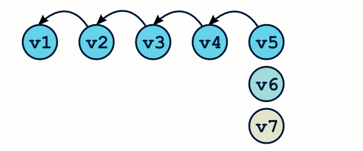
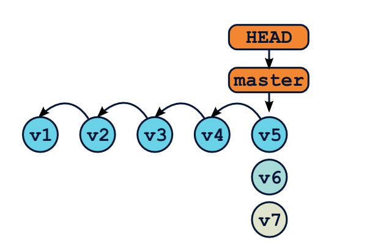
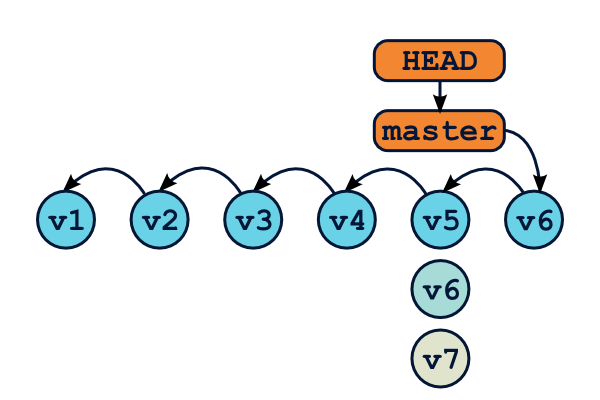
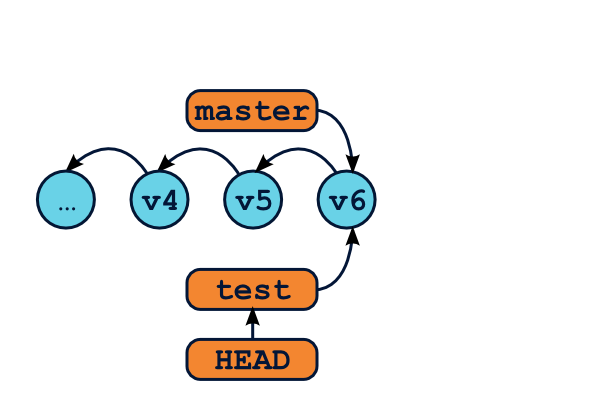
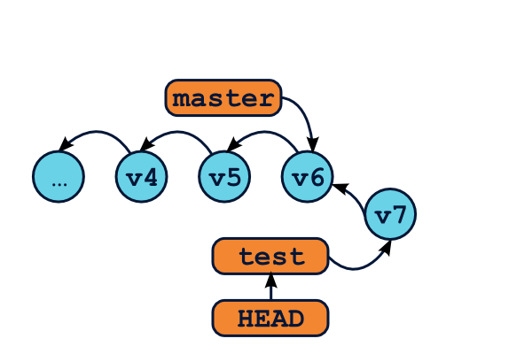
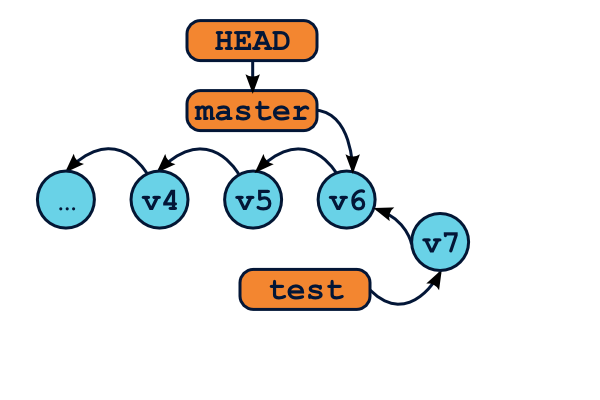
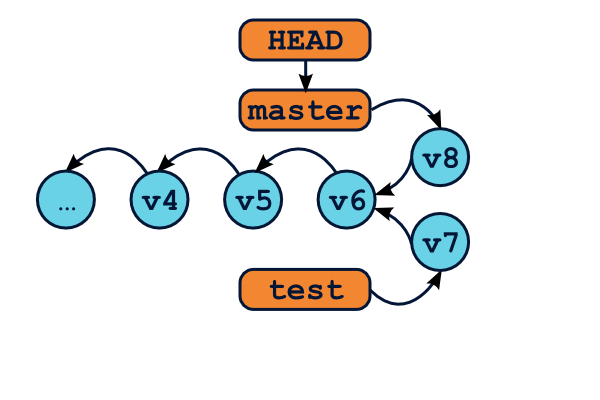

Formation Git
Thibault Jouannic
thibault@jouannic.fr — @thibaultj
- Miximum.fr
- Développeur Web indépendant
- Python, Django, Javascript
- Plus de 7 ans d'utilisation quotidienne de Git
Premier jour
- Gestion de version : comment et pourquoi ?
- Git — Concepts et fonctionnement
- Avant de démarrer
- Opérations basiques
- Retrouver l'info
- Les branches
- Fusions de branches
- Rebasing
- Dépôts distants
- Organisation et workflows
Deuxième jour
- Nettoyer son historique
- Debugging avec git
- Git sur le serveur
- Quelques commandes en détails
- Submodules et subtrees
- Les hooks
- Git et svn
- Fonctionnement interne de git
- Réseaugraphie
Git — Introduction
L'histoire de Git
BitKeeper, SCM non libre, était utilisé par Linus Torvalds pour développer le noyau Linux.
Quand les développeurs décident d'en révoquer le droit d'utilisation, Linus décide de construire son propre outil.
Git est donc développé pour des projets à trés grande ampleur.
Caractéristiques et prérequis
Git est donc développé par des développeurs hautement expérimentés, et avec de trés fortes exigeances.
- Haute performance
- Architecture distribuée
- Protection contre les corruptions et pertes de données
- Support d'un workflow non linéaire
Mais pourquoi est-il si génial ?
- Chaque version de fichier est sauvegardée (pas les deltas)
- Rapide comme l'éclair
- Fonctionne en local
- Quasiment impossible de perdre des données
Bon, tout n'est pas parfait non plus
- Des commandes aux multiples options ;
- Des commandes qui ont l'air de faire plusieurs choses ;
- Une syntaxe qui semble manquer (parfois) de cohérence ;
- Une certaine complexité (qui n'est qu'apparente) ;
Essayons !
$ mkdir test && cd test
$ git init
$ touch file
$ git status
$ git add file
$ git status
$ git commit -a -m "First commit"
$ git status
$ git log
Concepts et fonctionnement
Zones et états

Zones et états

Avant de démarrer
La configuration
- /etc/gitconfig
- ~/.gitconfig
- .git/config
Éditer le fichier de conf
$ git config -e
$ git config --global -e
Configurer un paramètre
$ git config --global user.name "Thibault Jouannic"
$ git config --global user.email "thibault@miximum.fr"
$ git config --global core.editor "'C:/Program Files/Notepad++/notepad++.exe' -multiInst -notabbar -nosession -noPlugin"
Supprimer un paramètre
$ git config --unset diff.renames
Lister les paramètres configurés
$ git config --list --show-origin
La configuration
[user]
mail = thibault@miximum.fr
name = Thibault Jouannic
[color]
ui = true
[alias]
lg = log --graph --pretty=format:'%Cred%h%Creset -%C(yellow)%d%Creset %s %Cgreen(%cr) %C(bold blue)<%an>%Creset' --abbrev-commit --all
[push]
default = current
[pull]
rebase = preserve
[merge]
tool = meld
conflictstyle = diff3
[diff]
compactionHeuristic = true
renames = true
Prompt et complétion
Un prompt personnalisé permet de disposer d'informations utiles directement.
TP
- Récupérez le .gitconfig sample
- https://raw.githubusercontent.com/thibault/prez/master/git/gitconfig
- Enregistrez-le à l'emplacement adéquat
Opérations basiques
Premier dépôt
Créer un nouveau dépôt
$ git initCloner un dépôt distant
$ git clone https://github.com/thibault/iwantyoursocks.git.gitignore
Pour ignorer certains fichiers.
Nombreux exemples sur https://github.com/github/gitignore
*.pyc
cache/
.DS_Store?
ehthumbs.db
Icon?
Thumbs.db
*.swp
.*.swp
*~
*.lock
*.out
Préparer le commit
$ # WD → Staging
$ git add . # Ajoute tous les fichiers sous le dir. courant
$ git add <file> # Ajoute un seul fichier ou dir.
$ git add -u # Ignore les fichiers non trackés, enregistre la suppr. de fichiers
$ git add -f # Ajout de fichiers ignorés
$ git add -i # Interactif KILLER FEATURE!
$ git add -p <file> # Mode patch directement
Commiter
$ # Staging → Repository
$ git commit # Commit et lance l'éditeur pour saisir le message
$ git commit -m "Mon message"
$ git commit -a # Tout commiter, même ce qui n'est pas dans le staging
$ git commit -am "Mon message" # Svn style, à éviter bien évidemment
Commiter
Visualiser l'état du dépôt
$ # HEAD ≠ Staging ≠ WD
$ git status
# On branch master
# Changes to be committed:
# (use "git reset HEAD file..." to unstage)
#
# modified: index.html
#
# Changes not staged for commit:
# (use "git add file..." to update what will be committed)
# (use "git checkout -- file..." to discard changes in working directory)
#
# modified: index.html
#
# Untracked files:
# (use "git add file..." to include in what will be committed)
#
# img
Supprimer et déplacer des fichiers
$ git rm <file> # Supprimer du repository et du WD
$ git rm --cached <file> # Supprimer du repository mais pas du WD
$ git mv source destination # Déplace un fichier
Sortir des fichiers du staging
$ git reset HEAD file # Égal la commande suivante :
$ git reset file # Copie la dernière version commitée dans le staging
$ git reset -p # La même, en interactif
$ # Ces trois dernières commandes ne touchent pas au WD
git reset peut faire bien plus, comme nous allons le voir plus tard.
Annuler les modifications d'un fichier
$ git checkout file # Copie la version staging de file dans le WD
Annuler un commit
Attention, il existe plusieurs méthodes. git revert créé un commit opposé à un commit existant.
$ git revert commit
$ git revert commit -n # Annule un commit mais attends votre validation pour commiter
TP
- Cloner le dépôt du TP.
- https://github.com/thibault/iwantyoursocks.git
- Créer un nouveau fichier vide « CONTRIBUTORS » et commiter.
- Ajouter votre nom et commiter de nouveau.
Retrouver l'info
Voir les différences entre deux états
$ git diff # Montre les différences entre le WD et le staging
$ git diff <file> # Limite à un seul fichier ou chemin
$ git diff --cached # Différences entre staging et HEAD
$ git diff HEAD # Différences entre le WD et HEAD
$ git diff <commit> # Différences avec un commit / branch particulier
$ git diff <commit> <commit> # Différences entre deux commits
$ git diff --word-diff # Différences mot à mot (au lieu de ligne à ligne)
$ git diff -w # Ignore les espaces dans la comparaison
Fouiller l'historique
$ git log
$ git log -p
$ git log <branch>
$ git log --author=Thibault
$ git log --grep=keyword -i -E
$ git log --graph
$ git log --format=oneline
$ git log --since="yesterday"
$ git log --since="1 hour ago"
$ git log --name-only
$ git lg
Voir des objets git
$ git show # Voir le dernier commit
$ git show <commit>
$ git show <blob>
$ git show <tag>
Spécifier un commit / révision
$ git … HEAD
$ git … HEAD^
$ git … efc95493798d878735a7ecf823c3aaacb59cf8c8
$ git … efc95493798d878735a7ecf823c3aaacb59cf8c8^^
$ git … efc95~3
$ git … hotfixes
Spécifier un intervalle de commits
$ git log efc95493798d8..
$ git log efc95493798d8..efc95493798d8~5
$ git log HEAD~5..
$ git log -5 # Pareil
TP
- Afficher le log du dépôt
- Afficher toutes les modifications qui ont impacté le fichier « index.md »
- Afficher le log de tous les commits entre f4881ac et 4078c07
- Afficher tous les commits qui contiennent le mot « menu »
- Afficher le détail du commit « 1c1ce3d3db90b9edf2240028e027581ef6d878c2 »
- Afficher toutes les modifications réalisées entre les commits f4881ac et 4078c07
- Afficher les modifications du répertoire « _layouts » entre les tags v0.0.1 et v1.0.0
Les branches
Tatatiiiiinnn…
Utilisez-les!
Avec d'autres SCM, les branches sont lentes, complexes et pénibles à utiliser.
Pas avec Git ! Les branches sont un outil essentiel à maîtriser.
Qu'est-ce qu'une branche ?
Uniquement une étiquette qui pointe sur un commit.
C'est tout ? C'est tout !
La branche master
La branche master
D'une branche à l'autre

$ git branch test
$ git checkout test
D'une branche à l'autre

Edit… Edit… Edit…
$ git commit
D'une branche à l'autre

$ git checkout master
D'une branche à l'autre

$ Edit… Edit… Edit…
$ git commit
Conséquences
Créer / supprimer une branche est… rapide !
Il est possible de créer une branche n'importe quand… même depuis un ancien commit !
Exemple
A---B---C---D ← master ← HEAD
Oups, j'ai oublié de faire une branche.
Exemple
$ git branch new_feature
A---B---C---D ← master ← HEAD
\
new_feature
Exemple
$ git reset --soft HEAD~2
A---B---C---D ← new_feature
\
master ← HEAD
Exemple
$ Commit… Commit… Commit…
A---B---C---D ← new_feature
\
E---F---G ← master ← HEAD
Exemple
$ git checkout new_feature
A---B---C---D ← new_feature ← HEAD
\
E---F---G ← master
Quand utiliser une branche ?
- Pour isoler un développement un peu long
- Pour faire des tests sans casser tout le dépôt
- Pour mettre quelques commits de côté
- Juste parce qu'on peut !
Créer une branche
$ git branch <name> && git checkout <name>
$ # ou, plus rapide
$ git checkout -b <name>
Passer d'une branche à l'autre
$ git checkout <branch1>
$ git checkout <branch2>
$ git checkout -
Supprimer une branche
$ git branch -d <name>
$ git branch -D <name> # si branche non fusionnée
Lister les branches
$ git branch # Lister les branches locales
$ git branch -r # Lister les branches distantes
$ git branch -a # Combine les deux
TP
- Lister les branches locales du dépôt
- Lister les branches distantes
- Récupérer en local les branches « colors », « material » et « patterns »
- Lister les branches fusionnées et non fusionnées
- Passer sur la branche « colors »
- Passer sur la branch « gh-pages »
- Créer une nouvelle branche « quicktest », supprimer un fichier, commiter
- Supprimer la branche « quicktest »
- Supprimer la branch « patterns »
Fusions de branches
A---B---C---D ← master
\
E---F---G ← hotfix
Now… what?
Pas de panique !
Si vous avez déjà tenté une fusion avec SVN ou autre, il est probable que vous soyez terrifié.
Avec Git, ça va bien se passer :)
Avant la fusion…
Il est important d'avoir un dépôt propre.
Tous les fichiers sont commités, le WD et l'index sont propres.
Placer le HEAD sur la branche principale.
Cas simple, le fast forward
A---B ← master ← HEAD
\
C---D---E ← hotfix
Cas simple, le fast forward
$ git merge hotfix
A---B---C---D---E ← master ← HEAD
\
hotfix
Cas simple, le fast forward
$ git branch -d hotfix
A---B---C---D---E ← master ← HEAD
Cas plus complexe
A---B---C---D ← master ← HEAD
\
E---F---G ← hotfix
Cas plus complexe
$ git merge hotfix
A---B---C---D---H ← master ← HEAD
\ /
E---F---G ← hotfix
Cas plus complexe
Git rejoue les commits de hotfix sur master.
Le résultat est enregistré dans un commit qui a deux parents.
S'il n'y a pas de conflits, ce sera un commit vide.
A---B---C---D---H ← master ← HEAD
\ /
E---F---G ← hotfix
Aah! les conflits…
Il arrive qu'un merge ne puisse être réalisé automatiquement.
Ex : Le même fichier modifé différemment dans deux branches distinctes.
Comment se passe un merge ?
Imaginons un fichier A, et ses différentes versions à travers le temps.
A1---A2---A3---A4
\
A5---A6---A7
Comment se passe un merge ?
Git considère trois versions du fichier : les deux dernières versions, et le dernier ancêtre commun.
A1---A2---A3---A4
\
A5---A6---A7
Ici, A2, A4 et A7.
Résoudre les conflits
git status permet de voir les fichiers mergés avec succès, et les autres.
git log --merge -p montre uniquement les commits qui impactent les fichiers à merger.
git show [:1,:2,:3]:<file> montre les différentes versions du fichier.
git diff / git difftool pour voir des différences.
Résoudre les conflits
Git modifie les fichiers conflictuels pour inclure des marqueurs de diff.
Cette ligne est la même dans les deux branches
<<<<<<< HEAD
Ajouté dans la branche master
=======
Ajouté dans la branche test
>>>>>>> test
Cette partie du fichier est commune
Résoudre les conflits
Modifier le fichier pour résoudre les conflits.
git add puis git commit
git mergetool permet de lancer un outil de résolution de merge.
Git mergetool
# voir les outils disponibles
git mergetool --tool-help
# configurer l'outil par défaut
git config --global merge.tool meld
# lancer l'outil de merge
git mergetool
Que faire après un merge ?
$ git branch --merged # montre toutes les branches mergées
$ git branch -d <bug_42> # supprime la branche
$ git branch --no-merged # montre les branches non fusionnées
Même une fois fusionnée, une branche peut continuer à vivre. Un autre merge pourra être réalisé plus tard.
Et si je supprime une branche non fusionnée ?
Tentons l'expérience suivante :
A---B---C---D---H ← master ← HEAD
\
E---F---G ← hotfix
$ git branch -D hotfix
Et si je supprime une branche non fusionnée ?
A---B---C---D---H ← master ← HEAD
Les commits de ma branche hotfix sont-ils perdus ?
Et si je supprime une branche non fusionnée ?
A---B---C---D---H ← master ← HEAD
\
E---F---G
En fait, les commits existent toujours, ils sont simplement inaccessibles.
Au bout de quelques jours, ils seront supprimés par le Garbage collector de git.
Le reflog
Git garde une trace de tous les changements de position de HEAD.
$ git reflog
$ git checkout G
A---B---C---D---H ← master
\
E---F---G ← HEAD
Mais… HEAD pointe directement vers un commit ? Pas une branche ?
L'état Detached HEAD
Quand HEAD pointe directement vers un commit, on parle de detached HEAD. Pour retrouver une situation stable, il suffit de créer une branche, et de continuer comme si de rien n'était.
$ git checkout -b newbranch
A---B---C---D---H ← master
\
E---F---G ← newbranch ← HEAD
TP
- Retrouver l'identité du commit perdu sur « quicktest »
- Fusionner la branche « material » dans « gh-pages »
- Fusionner la branche « colors » dans « gh-pages »
Rebasing
Qu'est-ce qu'un rebase ?
Le rebase est une autre façon d'intégrer les modifications de deux branches.
git rebase réapplique les commits d'une branche sur une autre base.
Merge vs. Rebase
A---B---C---D ← master ← HEAD
\
E---F---G ← hotfix
$ git merge hotfix
A---B---C---D---H ← master ← HEAD
\ /
E---F---G ← hotfix
$ git checkout hotfix && git rebase master
A---B---C---D---E'---F'---G' ← hotfix ← HEAD
\
master
Comment ça fonctionne ?
A---B---C---D ← master
\
E---F---G ← hotfix
- git met de côté tous les commits de la branche hotfix
- l'étiquette hotfix est déplacée sur le dernier commit de master
- les commits de côté sont tous ré-appliqués un par un
Conséquences
- Le résultat est le même que le merge, mais l'historique est « plat »
- Il n'y a pas de commits de fusion vide
- Chaque commit peut provoquer un conflit
- Les commits sont réécrits, ce ne sont pas les mêmes (ids différents)
A---B---C---D---E'---F'---G' ← master
Quand privilégier rebase sur merge ?
- Soigner son historique
- Rattraper un mauvais historique
- Faciliter l'intégration de branches
Éviter les commits de fusion
Si l'on créé de petites branches en local, on se retrouve facilement avec beaucoup de commits de fusion, et un historique difficile à lire.
F---G ← bug2
/
A---B---E---H---I ← master
\
C---D ← bug1
Éviter les commits de fusion
$ git rebase master bug1
$ git checkout master && git merge bug1
$ git rebase master bug2
$ git checkout master && git merge bug2
bug2
/
A---B---E---H---I---C'---D'---F'---G' ← master
\
bug1
Réparer un mauvais historique
Je n'ai pas créé ma branche depuis le bon commit.
A---B---H---I---J ← production
\
C---D---G ← feature_en_cours
\
E---F ← bug_urgent
Et si je veux passer bug_urgent en production, mais pas feature_en_cours ?
Réparer un mauvais historique
$ git rebase feature_en_cours bug_urgent --onto production
A---B---H---I---J---E'---F' ← production ← bug_urgent
\
C---D---G ← feature_en_cours
Les commits sont tous ceux qui sont dans bug_urgent mais pas dans feature_en_cours.
Autre exemple
A---B ← production
\
C---D---G ← bug_1
\
E---F ← bug_2
Oups ! bug_1 et bug_2 n'ont rien à voir.
Autre exemple
$ git rebase --onto production bug_1 bug_2
A---B ← production
|\
| C---D---G ← bug_1
\
E'---F' ← bug_2
Supprimer des commits
A---B---C---D---E---F---G ← master
Si je veux supprimer les commits C et D ?
Supprimer des commits
A---B---C---D---E---F---G ← master
$ git rebase --onto B D master
$ # Remplacer B et D par les sha1 des commits
A---B---E'---F'---G' ← master
Travailler proprement avec les branches distantes
A---B---C---D ← master distant
\
E---F---G ← master local
Faciliter l'intégratoin de branches au long cours
A---B---C---D--- … ---E---F---G ← master
\
H---I---J--- … ---K---L ← newsletter
$ git rebase master newsletter
A---B---C---D--- … ---E---F---G ← master
\
H---I---J--- … ---K---L ← newsletter
Travailler proprement avec les branches distantes
$ git pull --rebase
A---B---C---D ← master distant
\
E'---F'---G' ← master local
$ git push
A---B---C---D---E'---F'---G' ← master distant
\
master local
Grands pouvoirs, grandes responsabilités
si vous réécrivez l'historique d'une branche partagée, vos collègues vous tremperont dans le goudron et les plumes.
git rebase ne doit donc être utilisé que pour les branches locales.
Et si un rebase ne se passe pas bien ?
Les commits sont réappliqués un par un. Il y a donc des conflits potentiels.
$ git status # Comprendre ce qui se passe
$ # régler le conflit, puis :
$ git rebase --continue # reprendre le travail, ou
$ git rebase --abort # Tout annuler, ou
$ git rebase --skip # Continuer en laissant de côté ce commit
Eh ! pssst !
Pour frimer : git rerere
$ git config --global rerere.enabled true
TP
- Annuler les deux dernières fusions
- Rebaser « material » sur « gh-pages » et la fusionner
- Rebaser « colors » sur « gh-pages » et la fusionner
Dépôts distants
Parce qu'il faut bien partager le code à un moment ou à un autre.
Git est décentralisé
Rappel : git est un système décentralisé. Il n'y a pas de notion de dépôt central.
Sauf par convention.
Il est donc possible de créer autant de dépôts distants que nécessaire.
Git remote
Si vous clonez un dépôt, git l'enregistre comme dépôt distant dans le nouveau dépôt local.
$ git clone …
$ git remote # Lister les dépôts distants
$ git remote show origin # Détail sur le dépôt distant
Par convention, le dépôt distant par défaut se nomme origin.
Git remote
git remote sert à gérer les dépôts distants.
$ git remote add <name> <url> # Ajoute un nouveau remote
$ git remote rm …
$ git remote mv …
$ git help remote
Git remote
N'importe quel dépôt peut être utilisé comme dépôt distant !
- Un dépôt sur un autre serveur
- Un autre dépôt sur votre propre machine
- Le dépôt d'un·e collègue
- …
Protocoles de communication
Un dépôt git peut être partagé via de nombreux protocoles. Parmi les plus courants :
- SSH : ssh://[user@]host.xz[:port]/path/to/repo.git/
- (autre syntaxe) user@host.xz:repo.git/
- GIT : git://host.xz[:port]/path/to/repo.git/
- Filesystem : file:///path/to/repo.git
Branches distantes
Une branche distante est une branche locale read-only qui représente une branche sur le dépôt distant. Euh… wat ?
$ git branch -a
* master
remotes/origin/master
Serveur distant :
A---B---C---D ← master
Serveur local :
A---B---C---D ← origin/master
\
E---F ← master
Branches distantes
A---B---C---D ← origin/master
\
master
A---B---C---D ← origin/master
\
master
A---B---C ← origin/master
\
D ← master
A---B---C---E ← origin/master
\
D ← master
Mettre à jour le dépôt local
Serveur distant :
A---B---C---D---G ← master
Serveur local :
A---B---C---D ← origin/master
\
E---F ← master
Mettre à jour le dépôt local
$ git fetch # Télécharge les données du serveur
Serveur distant :
A---B---C---D---G ← master
Serveur local :
A---B---C---D---G ← origin/master
\
E---F ← master
Mettre à jour le dépôt local
$ git merge / git rebase
Serveur distant :
A---B---C---D---G ← master
Serveur local :
A---B---C---D---G ← origin/master
\
E---F ← master
Mettre à jour le dépôt local
$ git pull / git pull --rebase
Branches trackées ou non
$ git pull
There is no tracking information for the current branch.
Please specify which branch you want to merge with.
See git-pull(1) for details
git pull <remote> <branch>
If you wish to set tracking information for this branch you can do so with:
git branch --set-upstream-to=<remote>/<branch> <branch>
$ git pull origin testing
Branches trackées ou non
Toutes les branches locales n'ont pas à être sur le serveur, et vice-versa.
Une branche trackée est une branche locale qui a une relation directe avec une branche distante.
$ git fetch # Ne télécharge que les branches trackées de origin
$ git fetch origin <branch> # Pour les autres branches
$ git pull # Fetch + merge
$ git push # Envoie les données vers la branches distante correspondante
# cf. git push.default
Configurer les informations de tracking
En créant la branche :
$ git checkout -b branch origin/<branch> # Récupère et tracke une branche distante
$ git checkout -t origin/<branch> # même chose, mais plus court
Après coup :
$ git branch branch && git checkout branch
$ git branch -u upstream/branch
Configurer les informations de tracking
$ git branch -vv
* mapping ff1571d Merge branch 'master' into mapping
master d11d11c [origin/master] Proper call to super() in BoolMixin.
Envoyer son travail sur le serveur
git push envoie les données locales sur le serveur distant.
$ git push # Seulement les branches trackées
$ git push origin <branch> # Push une nouvelle branche
$ git push origin :<branch> # Supprime une branche distante
Cf. git help config -> push.default
Envoyer son travail sur le serveur
Évidemment, il faut avoir un droit le lecture / écriture sur le dépôt distant.
Il faut également que le dépôt local soit à jour.
TP
- Créer un nouveau dépôt « bare » en clonant le dépôt Github
- Dans le dépôt initial, configurer le nouveau dépôt comme dépôt distant
- Télécharger les données du nouveau dépôt
- « pusher » votre branche gh-pages à jour
- Configurer « gh-pages » pour tracker la branche sur le nouveau distant
Organisation et workflows
Bienvenue dans la jungle
Avec git, on peut créer autant qu'on veut de :
- branches locales ;
- dépôts distants ;
- branches distantes.
Sans obligations de correspondances directes entre les uns et les autres.
Bienvenue dans la jungle
Du coup, ça peut vite devenir… b**lique.
- Comment organiser ses branches locales ?
- Quel workflow pour le travail collaboratif ?
Il n'y a pas de réponses unique, mais voici quelques pistes de réflexion.
Organiser ses branches
Journée classique d'un développeur :
- Je travaille sur un projet X
- Depuis une semaine, je bosse sur la fonctionnalité Y, assez complexe
- En parallèle, je dois résoudre un bug complexe avant la fin de la semaine
- Zut ! le client remonte un bug, simple à corriger mais urgent
SVN (bad) style
Exemples de mauvaises pratiques issues d'une habitude SVN :
- Travailler sur une seule branche (master) ;
- Pusher trés régulièrement ;
- Puller trés régulièrement ;
SVN (bad) style
Conséquences :
- La branche principale est potentiellement cassée ;
- L'historique global est pourri de commits de fusion ;
- Mes développements sont mélangés dans mon historique ;
Propositions de workflows
Deux branches permanentes.
Master contient le code déployé en production.
Dev est la branche d'intégration.
v1.0.0 v1.0.1
/ /
o---------o-------o ← master
/ /
o---o---o---o---o---o ← dev
Master est toujours stable, et peut donc servir pour déployer régulièrement (déploiement automatique).
Dev contient tous les derniers développements, et sert pour l'intégration continue (tests + builds).
Développer des fonctionnalités
o---o---o---o---o ← feature-login
/ \
o---o-----------o---o---o ← dev
| \ /
| o---o---o ← feature-newsletter
\
o---o---o---o ← feature-stupidtest
$ git checkout -b feature-login dev
$ Commit… Commit… Commit…
$ git checkout dev
$ git merge --no-ff feature-login
$ git branch -d feature-login
Préparer une release
v1.0.1
/
o---------o---------o ← master
/
o---o---o ← release-1.0.1
/ \ \
o---o---o---o---o---o ← dev
$ git checkout -b release-1.0.1 dev
$ echo "1.0.1" > VERSION
$ git commit -am "Bump version number"
$ Corrige un bug… Commit…
$ git checkout master
$ git merge --no-ff release-1.0.1
$ git tag -a 1.0.1
$ git checkout dev
$ git merge --no-ff release-1.0.1
$ git branch -d release-1.0.1
Corriger un bug urgent
v1.0.2
/
o---------o-----------o ← master
\ /
o---o---o ← hotfix-1.0.2
\
o---o---o---o---o---o ← dev
$ git checkout -b hotfix-1.0.2 master
$ echo "1.0.1" > VERSION
$ git commit -am "Bump version number"
$ Corrige un bug… Commit…
$ git checkout master
$ git merge --no-ff hotfix-1.0.2
$ git tag -a 1.0.2
$ git checkout dev
$ git merge --no-ff hotfix-1.0.2
$ git branch -d hotfix-1.0.2
Organiser ses dépôts distants
Le dépôt centralisé
Le plus simple pour démarrer.

Organiser ses dépôts distants
Le dépôt d'intégration

Organiser ses dépôts distants
Le modèle « dictateur / lieutenants »

TP
- Préparer la release de la version 1.0.1 et fusionner
- Trouver une faute à corriger, et créer une version 1.0.2
- Pusher vos nouveaux tags sur le serveur